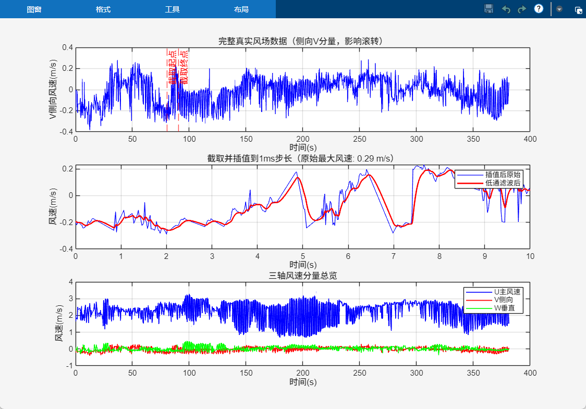
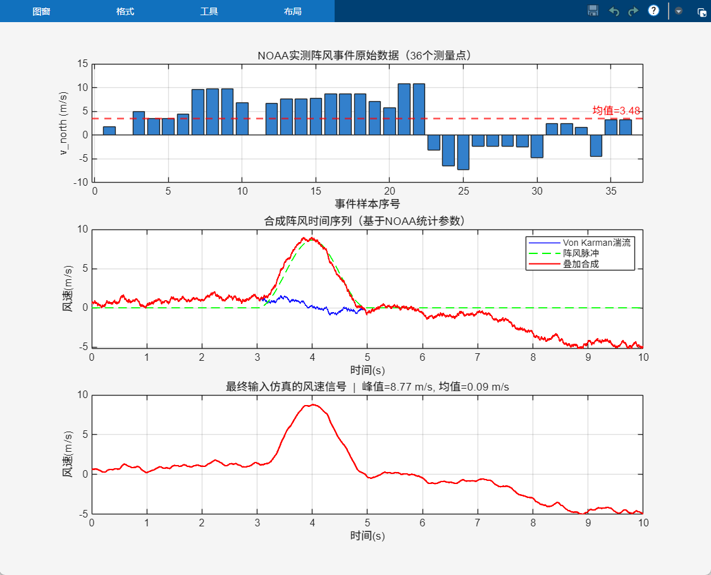
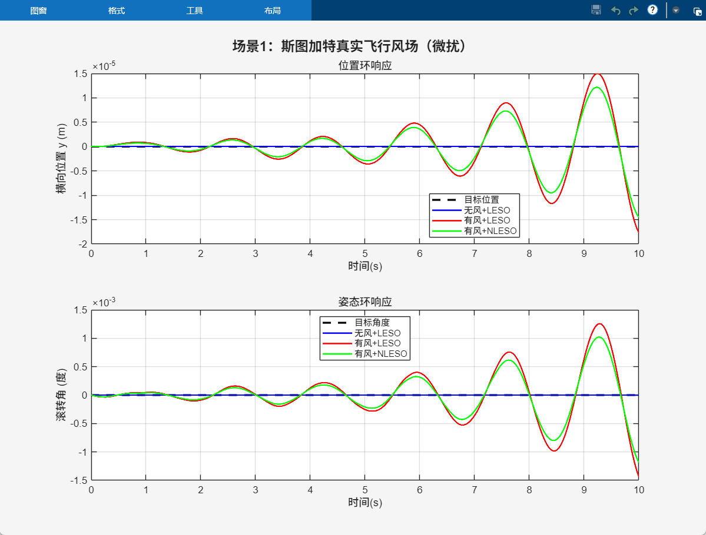
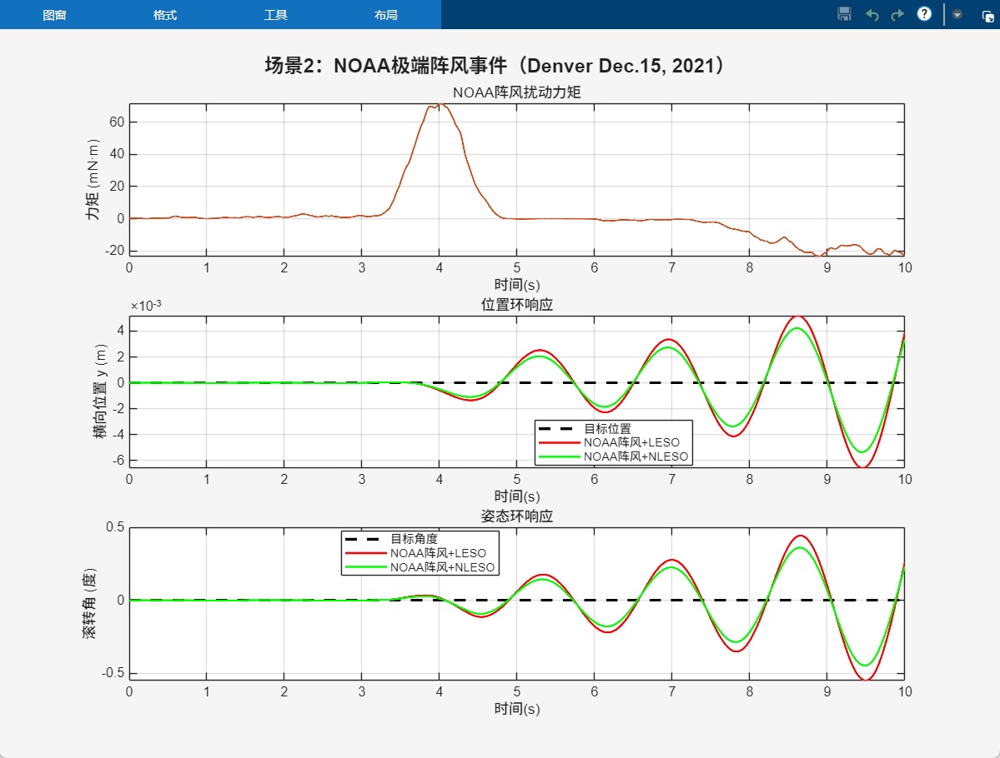

ESC · 关闭




| 控制方案 | 风场场景 | 位置最大偏差 | 姿态最大偏差 | ISE积分误差 | 综合评级 |
|---|---|---|---|---|---|
| 无风 + LESO | 基准 | ≈ 0 | ≈ 0° | ≈ 0 | ★★★★★ |
| 斯图加特 + LESO | 微扰场景① | 1.5×10⁻⁵ m | 1.5×10⁻³ ° | 极小 | ★★★★★ |
| 斯图加特 + NLESO | 微扰场景① | 1.2×10⁻⁵ m | 1.2×10⁻³ ° | 极小 | ★★★★★ |
| NOAA阵风 + LESO | 极端场景② | 5×10⁻³ m | ±0.5° | 0.000080 | ★★★★☆ |
| NOAA阵风 + NLESO | 极端场景② | 4×10⁻³ m | ±0.4° | 0.000080 | ★★★★★ |